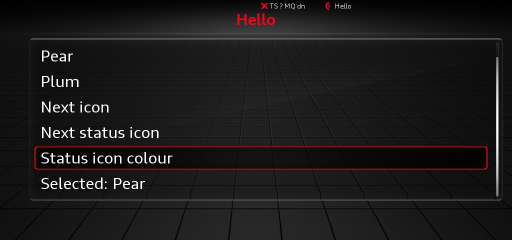

Tutorial: build a coffee timer¶
In this tutorial you will build coffee-timer, a small plugin that:
- adds a Coffee row with a cup icon to the Car drawer;
- opens a page with a brew-time slider and a "pop up when ready" toggle;
- keeps both settings across reboots;
- counts down on the status line while it brews;
- shows a toast when the coffee is ready.

The finished plugin is in plugins/coffee-timer.
Every marked code block below is compared with that sample by the docs build, so the page and the
sample cannot drift apart.
Before you start: install the SDK on the unit and complete Prerequisites. You do not need a unit to write and test the plugin.
1. Create the project¶
git clone https://github.com/complex256/mib2q-plugin-sdk.git
cp -R mib2q-plugin-sdk/templates/plugin coffee-timer
cd coffee-timer
Rename the template's package and class to the tutorial's names:
- package
example.myplugin→tutorial.coffeetimer - class
MyPlugin→CoffeeTimerPlugin
Delete the scaffolded MyPlugin.java and MyPluginTest.java; you will write the real ones below. Keep
the wrapper, the build file and the settings file.
The project should look like this:
coffee-timer/
├── build.gradle.kts
├── settings.gradle.kts
├── gradle.properties
├── gradlew
├── src/
│ ├── main/
│ │ ├── java/tutorial/coffeetimer/CoffeeTimerPlugin.java
│ │ ├── resources/plugin.json
│ │ └── icons/
│ │ ├── cup.png
│ │ └── cup-20.png
│ └── test/java/tutorial/coffeetimer/CoffeeTimerPluginTest.java
└── .gitignore
2. The manifest¶
plugin.json tells the build and the unit what the plugin is and what it may do.
{
"id": "coffee-timer",
"name": "Coffee Timer",
"version": "1.0.0",
"author": "your-name",
"api": 5,
"main": "tutorial.coffeetimer.CoffeeTimerPlugin",
"permissions": ["ui.slot.carmenu", "ui.slot.statusbar"],
"icons": ["cup", "cup-20"]
}
| Field | Here | Why |
|---|---|---|
id |
coffee-timer |
Names the jar, the package and your storage |
api |
5 |
The plugin uses a slider and a toast, both api 5 |
main |
tutorial.coffeetimer.CoffeeTimerPlugin |
The class the runtime instantiates |
permissions |
ui.slot.carmenu, ui.slot.statusbar |
One for the Car row, one for the status item and toast |
icons |
cup, cup-20 |
One 72 px row icon and one 20 px status icon |
The build validates every name against the permission catalog and fails if your code uses a permission the manifest does not declare.
3. Icons¶
The sample uses two PNGs:
| Icon | Size | Use |
|---|---|---|
cup.png |
72×72 | Car-drawer row |
cup-20.png |
20×20 | Status item and toast |
Icons must be 8-bit RGBA (or grey + alpha), non-interlaced, at most 72 px either way and at most 32 KiB.
A white glyph on a transparent background looks like the stock icons. The sample's generator is
plugins/coffee-timer/make_icons.py:
Any image editor that exports 8-bit RGBA works. The build checks the PNG rules and generates the faded reflection the Car drawer draws under a row icon.
4. The plugin class¶
Create src/main/java/tutorial/coffeetimer/CoffeeTimerPlugin.java:
package tutorial.coffeetimer;
import mibsdk.api.Icon;
import mibsdk.api.Log;
import mibsdk.api.MibPlugin;
import mibsdk.api.Page;
import mibsdk.api.PageSpec;
import mibsdk.api.PluginContext;
import mibsdk.api.Scheduler;
import mibsdk.api.StatusItem;
import mibsdk.api.Storage;
import mibsdk.api.Subscription;
import mibsdk.api.Ui;
import mibsdk.api.UiAction;
/**
* A brew timer: a Car-drawer row opens the "Coffee timer" page, where you set the brew time (a slider) and whether a
* toast pops up when it is done (a toggle). While a timer runs, the status line counts down; when it ends it says
* "Coffee ready" until you dismiss it. The brew time and the toggle are kept in storage.
*/
public class CoffeeTimerPlugin extends MibPlugin {
static final String PAGE_ID = "timer";
static final int MIN_MINUTES = 1;
static final int MAX_MINUTES = 10;
static final int DEFAULT_MINUTES = 4;
static final long MINUTE_MS = 60_000L;
private Log log;
private Storage storage;
private Scheduler scheduler;
private Ui ui;
private Page page;
private StatusItem status;
private Icon cupSmall;
private int minutes; // the brew time, stored as "minutes"
private boolean toastWhenReady; // stored as "toast" = on|off
private int left; // minutes left; 0 when no timer runs
private boolean ready; // the timer ended and nobody dismissed it yet
private Subscription tick; // the once-a-minute task while a timer runs
@Override
protected void onEnable(PluginContext ctx) {
log = ctx.log();
storage = ctx.storage();
scheduler = ctx.scheduler();
ui = ctx.ui();
minutes = storedMinutes();
toastWhenReady = !"off".equals(storage.get("toast", "on"));
cupSmall = ui.icon("cup-20");
page = ui.page(spec(), this::onAction);
ui.carMenuRow("Coffee", page, ui.icon("cup"));
status = ui.statusItem(null, cupSmall); // hidden until a timer runs
log.info("enabled, brew time " + minutes + " min");
}
@Override
protected void onDisable() {
// The runtime has already cancelled the timer, the page, the row and the status item.
log.info("disabled");
}
private void onAction(UiAction a) {
switch (a.itemId()) {
case "start" -> start();
case "stop" -> stop();
case "dismiss" -> {
ready = false;
status.set(null);
}
case "toast" -> {
toastWhenReady = a.requestedOn().booleanValue();
storage.put("toast", toastWhenReady ? "on" : "off");
}
case "minutes" -> {
minutes = a.value().intValue();
storage.put("minutes", String.valueOf(minutes));
}
default -> log.warn("unknown item " + a.itemId());
}
page.update(spec());
}
private void start() {
cancelTick();
ready = false;
left = minutes;
tick = scheduler.every(MINUTE_MS, this::onMinute);
status.set("Coffee " + left + "m", cupSmall);
log.info("brewing for " + minutes + " min");
}
private void stop() {
cancelTick();
left = 0;
status.set(null);
log.info("stopped");
}
private void onMinute() {
left--;
if (left > 0) {
status.set("Coffee " + left + "m", cupSmall);
} else {
cancelTick();
ready = true;
status.set("Coffee ready", cupSmall);
if (toastWhenReady) {
ui.toast("Coffee is ready", cupSmall);
}
log.info("ready");
}
page.update(spec());
}
private void cancelTick() {
if (tick != null) {
tick.cancel();
tick = null;
}
}
private PageSpec spec() {
PageSpec s = PageSpec.of(PAGE_ID, "Coffee timer");
s = left > 0 ? s.item("stop", "Stop timer", left + " min left") : s.item("start", "Start timer", minutes + " min");
if (ready) {
s = s.item("dismiss", "Dismiss", null);
}
return s.toggle("toast", "Pop up when ready", toastWhenReady)
.slider("minutes", "Brew time", MIN_MINUTES, MAX_MINUTES, 1, minutes, false)
.info(ready ? "Your coffee is ready." : left > 0 ? "Brewing..." : "Set a brew time, then Start.");
}
/** The stored brew time, or the default when none is stored or it is out of range. */
private int storedMinutes() {
try {
int m = Integer.parseInt(storage.get("minutes", String.valueOf(DEFAULT_MINUTES)));
return m >= MIN_MINUTES && m <= MAX_MINUTES ? m : DEFAULT_MINUTES;
} catch (NumberFormatException e) {
return DEFAULT_MINUTES;
}
}
}
What each part does¶
Lifecycle. The runtime creates the class with its no-argument constructor and calls onEnable(ctx)
once, on the plugin's own worker thread. PluginContext is the only door to the SDK. When the plugin is
disabled, reloaded, quarantined or the HMI shuts down, the runtime cancels everything the plugin
registered and then calls onDisable(). You do not have to clean up.
onDisable() also runs after an onEnable() that threw. Keep it defensive: fields assigned after the
failure point are still null.
One worker per plugin. onEnable, page actions, scheduler tasks, event listeners and dialog answers
all run on one SDK-owned thread, one at a time. That is why this class needs no synchronized and no
volatile. It also means a slow callback blocks the rest of your plugin: the SDK logs calls over 5 s and
quarantines a call that runs for 30 s. Your code never runs on an HMI thread.
A page and a Car row.
ui.page registers the page; the SDK also lists it under the plugin's entry in the Plugins menu.
carMenuRow adds the Car-drawer row. A plugin may have at most 8 pages and 2 Car rows.
PageSpec is immutable. Every builder call returns a new spec; to change the screen, build a new spec
and call page.update(spec). spec() rebuilds the page from the plugin's fields, which is the pattern
the samples use.
A toggle and a slider.
return s.toggle("toast", "Pop up when ready", toastWhenReady)
.slider("minutes", "Brew time", MIN_MINUTES, MAX_MINUTES, 1, minutes, false)
.info(...);
A toggle is the HMI's native checkbox. It does not flip by itself: you receive requestedOn() and
must store the value and update the page. A slider sends each knob step as value(). It shows its
position, not its number, so the "Start timer" row shows the minutes in its value column.
A page may have at most 4 slider plus dropdown rows; they are drawn after the list rows. Slider rules:
min < max, (max - min) % step == 0, at most 24 steps, and the current value on the grid.
A status item.
A plugin has one status item. set(null) or set("") hides it. Text is capped at 12 characters; the
line is shared with other plugins and the SDK's own indicators, so put the important part first.
set never fails because the user hid the item.
A toast.
A toast shows 20 characters and an optional 20 px icon for 3 seconds. It needs ui.slot.statusbar and
is inert if the unit cannot show inputs.
Storage. storage.get/put/remove is a string map per plugin, persisted across reboots. It is capped
at 256 KiB per plugin and 1 MiB for all plugins; a put past the cap throws. Parse stored values
defensively, as storedMinutes() does, because the data may come from an older version of your plugin.
Missing features are not errors. If the unit cannot show the UI this boot, page, carMenuRow,
statusItem and toast still return handles, but they are inert. Count and argument checks still apply.
Use ctx.has(Features.SLOT_CAR_MENU) and friends when you need to know.
5. Run it on your computer¶
There is no emulator for the head unit. Instead, PluginTestHarness installs the built jar into a
temporary "unit", starts the real runtime on a fake car and gives you a fake screen.
Create src/test/java/tutorial/coffeetimer/CoffeeTimerPluginTest.java:
package tutorial.coffeetimer;
import static org.junit.jupiter.api.Assertions.assertEquals;
import static org.junit.jupiter.api.Assertions.assertNull;
import java.io.File;
import java.util.Arrays;
import java.util.List;
import java.util.Properties;
import mibsdk.adapter.fake.FakeUi;
import mibsdk.test.PluginTestHarness;
import org.junit.jupiter.api.AfterEach;
import org.junit.jupiter.api.Test;
import org.junit.jupiter.api.io.TempDir;
class CoffeeTimerPluginTest {
@TempDir
File tmp;
private PluginTestHarness h;
/** What the plugin stored on an earlier run: set before start. */
private final Properties stored = new Properties();
private FakeUi ui;
/** A plugin page's key is "<plugin id>/<page id>". */
private String page;
private String row;
private String cup20Sha;
@AfterEach
void tearDown() {
if (h != null) {
h.close();
}
}
/** Installs the built jar into a temp "unit", starts the real runtime on the fake car and waits for the page. */
private void start() {
h = PluginTestHarness.builder(tmp).storedValues(stored).start();
ui = h.ui();
page = h.pageKey("timer");
row = "[png:" + h.iconSha("cup") + "] Coffee";
cup20Sha = h.iconSha("cup-20");
h.await(() -> !ui.render(page).isEmpty(), "the page");
}
private void minutePasses() {
h.advance(CoffeeTimerPlugin.MINUTE_MS);
}
// ---- the tests ----
@Test
void carRowOpensTheTimerPage() {
start();
h.await(() -> ui.carRows().contains(row), "the Coffee row: " + ui.carRows());
ui.selectRow(ui.carRows().indexOf(row));
h.await(() -> page.equals(ui.openPageKey()), "the page open");
assertEquals(Arrays.asList(
"Start timer: 4 min",
"[on] Pop up when ready",
"Brew time: 4 [1..10]",
"Set a brew time, then Start."), ui.render(page));
}
@Test
void sliderAndToggleAreStored() {
start();
ui.turn(page, "minutes", 7);
h.await(() -> ui.render(page).contains("Start timer: 7 min"), "7 min");
ui.toggle(page, "toast");
h.await(() -> ui.render(page).contains("[off] Pop up when ready"), "toggle off");
Properties stored = h.storedValues();
assertEquals("7", stored.getProperty("minutes"));
assertEquals("off", stored.getProperty("toast"));
}
@Test
void storedValuesAreRestored() {
stored.setProperty("minutes", "2");
stored.setProperty("toast", "off");
start();
List<String> lines = ui.render(page);
assertEquals("Start timer: 2 min", lines.get(0));
assertEquals("[off] Pop up when ready", lines.get(1));
}
@Test
void timerCountsDownOnTheStatusLineAndToasts() {
start();
ui.turn(page, "minutes", 2);
h.await(() -> ui.render(page).contains("Start timer: 2 min"), "2 min");
assertEquals("", ui.statusLine());
ui.select(page, "start");
h.await(() -> "Coffee 2m".equals(ui.statusLine()), "Coffee 2m on the status line");
minutePasses();
h.await(() -> "Coffee 1m".equals(ui.statusLine()), "Coffee 1m");
assertNull(ui.toast());
minutePasses();
h.await(() -> "Coffee ready".equals(ui.statusLine()), "Coffee ready");
h.await(() -> ("[png:" + cup20Sha + "] Coffee is ready").equals(ui.toast()), "the toast: " + ui.toast());
h.await(() -> ui.render(page).contains("Dismiss"), "the Dismiss row");
ui.select(page, "dismiss");
h.await(() -> "".equals(ui.statusLine()), "the status item hidden");
}
@Test
void noToastWhenTurnedOff() {
start();
ui.toggle(page, "toast");
ui.turn(page, "minutes", 1);
h.await(() -> ui.render(page).contains("Start timer: 1 min"), "1 min");
ui.select(page, "start");
h.await(() -> "Coffee 1m".equals(ui.statusLine()), "Coffee 1m");
minutePasses();
h.await(() -> "Coffee ready".equals(ui.statusLine()), "Coffee ready");
assertNull(ui.toast());
}
@Test
void stopCancelsTheTimer() {
start();
ui.select(page, "start");
h.await(() -> "Coffee 4m".equals(ui.statusLine()), "Coffee 4m");
h.await(() -> ui.render(page).contains("Stop timer: 4 min left"), "the Stop row");
ui.select(page, "stop");
h.await(() -> ui.render(page).contains("Start timer: 4 min"), "back to Start");
assertEquals("", ui.statusLine());
}
}
Run it:
The build passes the jar and the icons to the test. h.await(...) waits up to five seconds for the
runtime, so assertions are not racing the plugin's worker thread. h.advance(ms) moves the plugin's
scheduler forward, so a two-minute timer runs in milliseconds.
See Test your plugin for the rest of the harness API.
6. Build the jar¶
Output:
build/mibsdk/coffee-timer.jar
build/mibsdk/coffee-timer.jar.stamp
build/reports/mibsdk/linkcheck.txt
build/reports/mibsdk/permissions.txt
Do not edit the jar after the build: mibpkg checks the stamp, which records the checks and the jar's SHA-256.
7. Package and install¶
Output: build/mibsdk/coffee-timer-1.0.0.mpk.
Install it with the mibpkg web interface, or over SSH:
installer/mibsdk-dev install-plugin build/mibsdk/coffee-timer-1.0.0.mpk <unit-ip>
# exits 3 and lists the permissions:
installer/mibsdk-dev install-plugin build/mibsdk/coffee-timer-1.0.0.mpk \
--approve=ui.slot.carmenu,ui.slot.statusbar <unit-ip>
Open the Car drawer. The Coffee row is there.
The fast loop¶
Once the package is installed (so the grants and icons exist on the unit), push code changes as a jar:
The runtime hot-reloads the jar within a couple of seconds, with no HMI restart. A push carries only the jar: new icons or new permissions need a new package.
8. Where next¶
- Pages and inputs: every input, dialog and pattern.
- Status line: icons, colours and per-screen visibility.
- Icons: sizes, reflections and built-in glyphs.
- Test your plugin: grants, features, restart and storage.
- Troubleshooting: when it does not start.